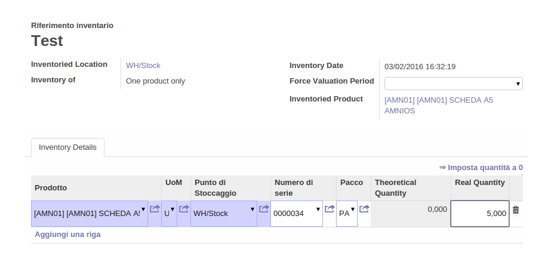

Funzioni principali del modulo
Questo modulo permette di aggiungere le informazioni sul pacco, riguardante:
locazione del pacco
Compagnia di riferimento


Quando si effettua una rettifica inventariale, si deve impostare il magazzino e gli eventuali prodotti da inserire nel pacco
Poi si deve impostare il pacco e la quantitá reale a disposizione:

Andando sul package si avrá adesso le due informazioni settate.